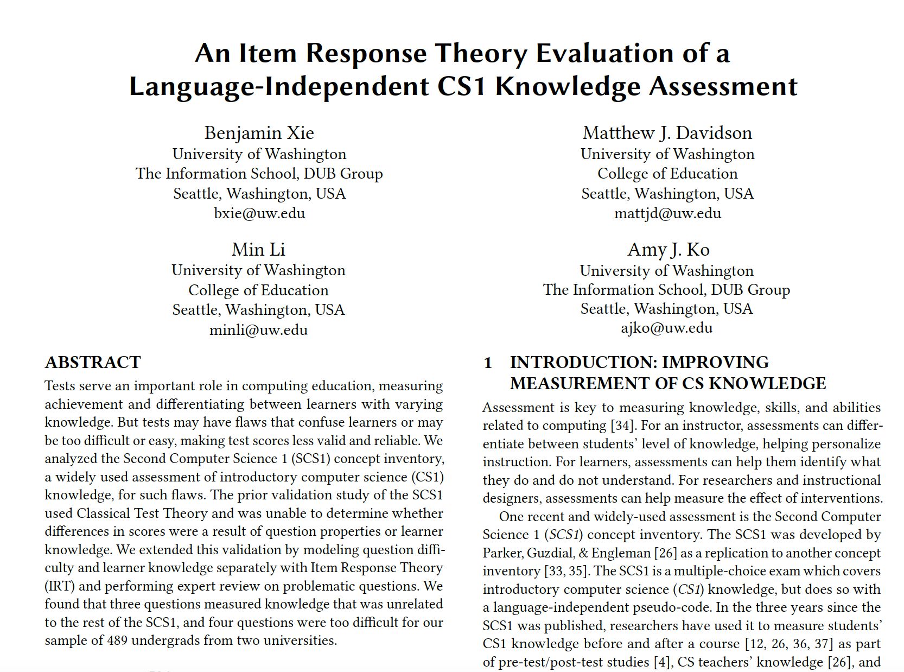
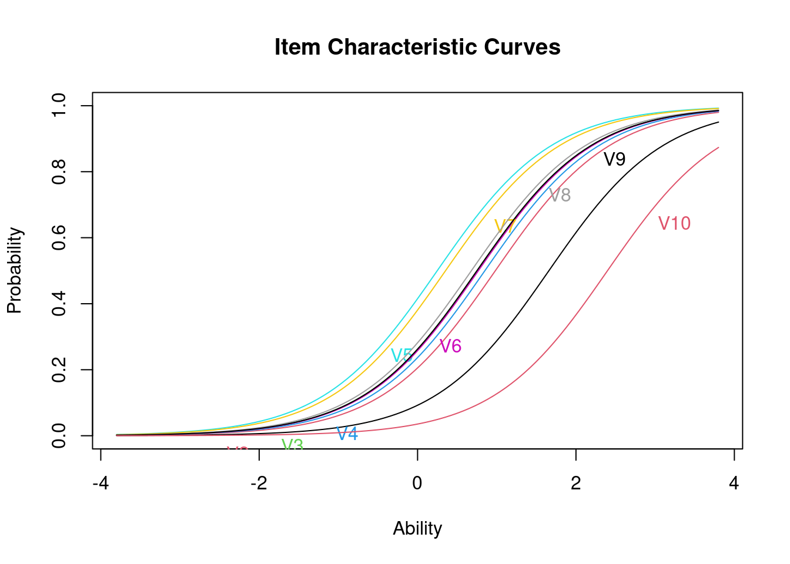
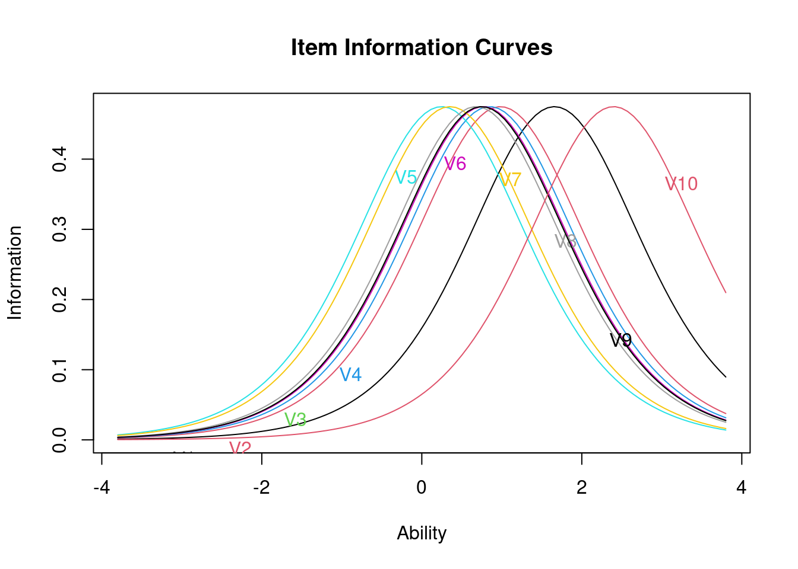

library(ltm)Loading required package: MASSLoading required package: msmLoading required package: polycorItem Response Theory
Our third case study is inspired by Xie et al. (2019) . The authors conducted a validation study of a computer science knowledge assessment using IRT to identify differences in question difficulty, and ability to discriminate knowledgeable students from non-knowledgeable students. The primary aim of this case study is to gain some hands-on experience with essential R packages and functions for working with Item Response Theory.

The full Paper Link is here
In this study, Xie et al. (2019) conducted a validation study to evaluate the Second Computer Science 1 (SCS1) concept inventory using Item Response Theory (IRT). The prior research had used Classical Test Theory so it was not able to determine if the differences in scores resulted from the question difficulty or the learner’s knowledge. By employing IRT, the study was able to model question difficulty and learner knowledge separately. The authors identified problematic questions that needed revision.
The authors’ four research questions were: 1: Do all the SCS1 questions measure the same underlying construct (CS1knowledge)? 2: For what levels of CS1 knowledge does the SCS1 measure well? 3: How closely do the difficulty levels of the SCS1 questions align with the knowledge levels of our sample group? 4: What do the response patterns of problematic questions reveal?
The authors analyzed responses to the SCS1, a 27-question multiple-choice assessment of CS1 knowledge. These responses are from 507 undergrad students from the University of Washington, Seattle and Georgia Institute of Technology. A pre-test and post-test were conducted but only the pre-test was analyzed. Test-takers who spent 10-70 minutes taking the SCS1 and attempted at least 10 questions were considered.
First, they verified conditional item independence and unidimensionality. Then, they fit the Rasch, 1 Parameter Logistic (1PL), 2 parameter logistic (2PL), and 3 Parameter Logistic (3PL) models to the data with questions with the ltm package in R. Model performance was assessed using Akaike information criterion(AIC) and Bayesian information criterion (BIC) despite the 2PL model having a greater BIC than Rasch and 1PL models. The 2PL model was finally selected because all the questions fit. Q5, 13, 15, and 18 were found to be potentially too difficult. These items also didn’t do a great job of distinguishing students at different knowledge levels. Three questions (Q20, 24, 27) were removed from the analysis because they had poor factor loadings, indicating they did not align well with the rest of the assessment.
3 SCS1 questions may assess knowledge that is different from the rest of the test; 4 other questions were too difficult for this student group. IRT can reveal how and for whom each question was difficult, and estimate question difficulty and learner knowledge separately. The SCS1 needs more improvement in terms of validity.
Are there any ways IRT could be useful to you in your work? Keep in mind that IRT can’t be used with data when student knowledge is changing, but related algorithms like temporal IRT and ELO can be used in those cases. Type a brief response in the space below:
In this case study, you will use the ltm package to build the basic IRT model and its variants.
CRAN is a network of FTP and web servers around the world that store identical, up-to-date, versions of code and documentation for R and R packages.
You can use the CRAN mirror nearest to you to minimize network load.
ltm package includes the analysis of multivariate dichotomous and polytomous data using latent trait models under the Item Response Theory approach. It includes Rasch, 2PL, the Birnbaum’s Three-Parameter, the Graded Response, and the Generalized Partial Credit Models.
CRAN page: https://cran.r-project.org/web/packages/ltm/index.html
Use the code chunk below to load the ltm package.
library(ltm)Loading required package: MASSLoading required package: msmLoading required package: polycorThe “psych” package is an R package that provides various functions for psychological research and data analysis. It contains tools for data visualization, factor analysis, reliability analysis, correlation analysis, and more.
CRAN page: https://cran.r-project.org/web/packages/psych/index.html
Use the code chunk below to load the psych package.
library(psych)
Attaching package: 'psych'The following object is masked from 'package:ltm':
factor.scoresThe following object is masked from 'package:polycor':
polyserialData wrangling is the process of converting raw data into a format suitable for analysis.
First, you will import the data you will use: (simulated) results from N=500 individuals taking a 10-item test (V1-V10). Items are coded 1 for correct and 0 for incorrect responses. This dataset is from Dr. Julie Wood, Introduction to IRT modeling.
irtdata<-read.table("./data/ouirt.dat", header=F)
head(irtdata)| V1 | V2 | V3 | V4 | V5 | V6 | V7 | V8 | V9 | V10 |
|---|---|---|---|---|---|---|---|---|---|
| 0 | 1 | 1 | 1 | 1 | 1 | 1 | 1 | 1 | 0 |
| 0 | 1 | 0 | 0 | 1 | 0 | 1 | 0 | 0 | 0 |
| 0 | 0 | 0 | 0 | 1 | 1 | 1 | 0 | 1 | 0 |
| 0 | 0 | 0 | 0 | 0 | 0 | 0 | 0 | 0 | 0 |
| 0 | 0 | 0 | 0 | 0 | 0 | 1 | 0 | 0 | 0 |
| 0 | 0 | 1 | 0 | 0 | 0 | 0 | 0 | 0 | 0 |
The describe() function in the R Programming Language is a useful tool for generating descriptive statistics of data. It provides a comprehensive summary of the variables in a data frame, including central tendency, variability, and distribution measures.
We add psych:: before describe to specify that we are using the describe function in the psych package.
psych::describe(irtdata)| vars | n | mean | sd | median | trimmed | mad | min | max | range | skew | kurtosis | se | |
|---|---|---|---|---|---|---|---|---|---|---|---|---|---|
| V1 | 1 | 500 | 0.150 | 0.3574290 | 0 | 0.0625 | 0 | 0 | 1 | 1 | 1.9545139 | 1.823784 | 0.0159847 |
| V2 | 2 | 500 | 0.268 | 0.4433612 | 0 | 0.2100 | 0 | 0 | 1 | 1 | 1.0444577 | -0.910918 | 0.0198277 |
| V3 | 3 | 500 | 0.318 | 0.4661659 | 0 | 0.2725 | 0 | 0 | 1 | 1 | 0.7792763 | -1.395507 | 0.0208476 |
| V4 | 4 | 500 | 0.296 | 0.4569481 | 0 | 0.2450 | 0 | 0 | 1 | 1 | 0.8910946 | -1.208355 | 0.0204353 |
| V5 | 5 | 500 | 0.438 | 0.4966380 | 0 | 0.4225 | 0 | 0 | 1 | 1 | 0.2491795 | -1.941781 | 0.0222103 |
| V6 | 6 | 500 | 0.314 | 0.4645812 | 0 | 0.2675 | 0 | 0 | 1 | 1 | 0.7991198 | -1.364124 | 0.0207767 |
| V7 | 7 | 500 | 0.412 | 0.4926880 | 0 | 0.3900 | 0 | 0 | 1 | 1 | 0.3565096 | -1.876642 | 0.0220337 |
| V8 | 8 | 500 | 0.334 | 0.4721120 | 0 | 0.2925 | 0 | 0 | 1 | 1 | 0.7018165 | -1.510463 | 0.0211135 |
| V9 | 9 | 500 | 0.318 | 0.4661659 | 0 | 0.2725 | 0 | 0 | 1 | 1 | 0.7792763 | -1.395507 | 0.0208476 |
| V10 | 10 | 500 | 0.070 | 0.2554025 | 0 | 0.0000 | 0 | 0 | 1 | 1 | 3.3604990 | 9.311589 | 0.0114219 |
Because this is simulated data, you will go directly into building the IRT model. Otherwise, we will clean the data, checking if there’s anything missing values, etc.
We fit the 1PL model to our 500 responses to our 10-item test. That is, we estimate item difficulty 𝑏 based on how people answered the items.
PL1.rasch<-rasch(irtdata)
summary(PL1.rasch)
Call:
rasch(data = irtdata)
Model Summary:
log.Lik AIC BIC
-2587.186 5196.372 5242.733
Coefficients:
value std.err z.vals
Dffclt.V1 1.6581 0.1303 12.7219
Dffclt.V2 0.9818 0.1031 9.5233
Dffclt.V3 0.7499 0.0968 7.7431
Dffclt.V4 0.8495 0.0993 8.5522
Dffclt.V5 0.2482 0.0891 2.7851
Dffclt.V6 0.7677 0.0973 7.8930
Dffclt.V7 0.3528 0.0900 3.9186
Dffclt.V8 0.6794 0.0953 7.1311
Dffclt.V9 0.7499 0.0968 7.7429
Dffclt.V10 2.3978 0.1764 13.5892
Dscrmn 1.3782 0.0741 18.5941
Integration:
method: Gauss-Hermite
quadrature points: 21
Optimization:
Convergence: 0
max(|grad|): 0.0021
quasi-Newton: BFGS You can see the difficulty estimates of all the items here. For example, the difficulty estimate for Item 1 is b=1.66, z=12.7. A z-value greater than 1.96 indicates that the difficulty parameter is significantly greater than zero. Higher difficulty estimates mean that it requires a higher knowledge level to answer the question correctly.
PL2.rasch<-ltm(irtdata~z1)
summary(PL2.rasch)
Call:
ltm(formula = irtdata ~ z1)
Model Summary:
log.Lik AIC BIC
-2575.88 5191.759 5276.052
Coefficients:
value std.err z.vals
Dffclt.V1 1.6318 0.1920 8.4979
Dffclt.V2 1.1022 0.1550 7.1098
Dffclt.V3 0.8210 0.1270 6.4627
Dffclt.V4 0.7778 0.1015 7.6660
Dffclt.V5 0.2550 0.0925 2.7571
Dffclt.V6 0.7372 0.1046 7.0473
Dffclt.V7 0.4766 0.1339 3.5593
Dffclt.V8 0.6493 0.0994 6.5356
Dffclt.V9 0.6485 0.0889 7.2943
Dffclt.V10 1.9257 0.2027 9.5001
Dscrmn.V1 1.4183 0.2315 6.1265
Dscrmn.V2 1.1445 0.1741 6.5733
Dscrmn.V3 1.1910 0.1736 6.8621
Dscrmn.V4 1.6444 0.2279 7.2157
Dscrmn.V5 1.3398 0.1851 7.2367
Dscrmn.V6 1.4973 0.2070 7.2335
Dscrmn.V7 0.8748 0.1430 6.1185
Dscrmn.V8 1.5133 0.2070 7.3116
Dscrmn.V9 1.8716 0.2587 7.2357
Dscrmn.V10 2.1060 0.4226 4.9834
Integration:
method: Gauss-Hermite
quadrature points: 21
Optimization:
Convergence: 0
max(|grad|): 0.00056
quasi-Newton: BFGS The 3PL model adds a parameter for the possibility that students can guess the answer without knowing it. This often makes it harder for models to converge.
PL3.rasch<-tpm(irtdata)Warning in tpm(irtdata): Hessian matrix at convergence is not positive definite; unstable solution.summary(PL3.rasch)
Call:
tpm(data = irtdata)
Model Summary:
log.Lik AIC BIC
-2573.76 5207.519 5333.958
Coefficients:
value std.err z.vals
Gussng.V1 0.0000 0.0009 0.0276
Gussng.V2 0.1064 0.0571 1.8636
Gussng.V3 0.0000 0.0019 0.0252
Gussng.V4 0.0793 0.0429 1.8490
Gussng.V5 0.0000 0.0024 0.0158
Gussng.V6 0.0001 0.0026 0.0223
Gussng.V7 0.0002 0.0058 0.0284
Gussng.V8 0.0000 0.0003 0.0113
Gussng.V9 0.0017 NaN NaN
Gussng.V10 0.0000 0.0001 0.0185
Dffclt.V1 1.6360 0.1914 8.5456
Dffclt.V2 1.2145 0.1387 8.7569
Dffclt.V3 0.8177 0.1250 6.5434
Dffclt.V4 0.8900 0.1104 8.0642
Dffclt.V5 0.2580 0.0921 2.8002
Dffclt.V6 0.7466 0.1055 7.0747
Dffclt.V7 0.4772 0.1337 3.5684
Dffclt.V8 0.6516 0.0983 6.6270
Dffclt.V9 0.6569 0.0833 7.8816
Dffclt.V10 1.9191 0.2001 9.5917
Dscrmn.V1 1.4148 0.2298 6.1576
Dscrmn.V2 2.0070 0.9136 2.1967
Dscrmn.V3 1.2085 0.1753 6.8951
Dscrmn.V4 2.5299 0.8111 3.1190
Dscrmn.V5 1.3529 0.1866 7.2489
Dscrmn.V6 1.4799 0.2061 7.1818
Dscrmn.V7 0.8820 0.1438 6.1332
Dscrmn.V8 1.5261 0.2069 7.3755
Dscrmn.V9 1.8865 0.2261 8.3425
Dscrmn.V10 2.1150 0.4193 5.0442
Integration:
method: Gauss-Hermite
quadrature points: 21
Optimization:
Optimizer: optim (BFGS)
Convergence: 0
max(|grad|): 0.015 item.fit(PL1.rasch,simulate.p.value=T)
Item-Fit Statistics and P-values
Call:
rasch(data = irtdata)
Alternative: Items do not fit the model
Ability Categories: 10
Monte Carlo samples: 100
X^2 Pr(>X^2)
V1 12.1830 0.6634
V2 15.1135 0.4257
V3 11.9995 0.7327
V4 21.0226 0.1683
V5 15.3784 0.5842
V6 14.7103 0.4851
V7 4.0974 1
V8 23.3690 0.1089
V9 26.4597 0.0594
V10 25.7195 0.0198Here, we use the fit function to test whether the individual items fit well in the 1PL model. You can see that Questions 4, 9, and 10 may not fit the 1PL model because they have low p-values here.
Test if these items fit well in the 2PL and 3PL models, and share your results.
plot(PL1.rasch,type=c("ICC"))
You can use the plot function to plot item characteristic curves. The x-axis represents a student’s level of ability/knowledge. The y-axis is the model’s estimated probability that a student will answer the question correctly.
According to these curves, which question is the most difficult one? Why?
Type a brief response in the space below:
plot(PL1.rasch,type=c("IIC"))
Item information curves show how much “information” about the latent trait ability an item gives, which is related to discriminability. Practically speaking, a very difficult item could provide little information about students with low ability (because most of the students couldn’t answer it correctly). Correspondingly, very easy items will provide little information about persons with high ability levels (because almost most of the students could answer them correctly).
Here, you can see that question 10 provides information about high knowledge levels while question 5 provides more information about low knowledge levels. Overall, you want to test if these items have a good coverage of all the knowledge levels. Otherwise, this item set is not able to identify a full range of knowledge levels.
Plot Item information curves and Item characteristic curves for 2PL and 3PL models and share your analysis below.
unidimTest(PL1.rasch,irtdata)
Unidimensionality Check using Modified Parallel Analysis
Call:
rasch(data = irtdata)
Matrix of tertachoric correlations
V1 V2 V3 V4 V5 V6 V7 V8 V9 V10
V1 1.0000 0.3476 0.3357 0.3959 0.4449 0.4422 0.5215 0.3278 0.4158 0.3403
V2 0.3476 1.0000 0.3124 0.3945 0.3909 0.3664 0.2408 0.3352 0.4293 0.4101
V3 0.3357 0.3124 1.0000 0.3933 0.2970 0.3734 0.3011 0.4434 0.4040 0.4058
V4 0.3959 0.3945 0.3933 1.0000 0.3853 0.5101 0.3035 0.4368 0.5135 0.6024
V5 0.4449 0.3909 0.2970 0.3853 1.0000 0.3370 0.3526 0.4138 0.5149 0.3979
V6 0.4422 0.3664 0.3734 0.5101 0.3370 1.0000 0.3137 0.4146 0.4801 0.4795
V7 0.5215 0.2408 0.3011 0.3035 0.3526 0.3137 1.0000 0.3311 0.2054 0.1714
V8 0.3278 0.3352 0.4434 0.4368 0.4138 0.4146 0.3311 1.0000 0.5069 0.4533
V9 0.4158 0.4293 0.4040 0.5135 0.5149 0.4801 0.2054 0.5069 1.0000 0.6099
V10 0.3403 0.4101 0.4058 0.6024 0.3979 0.4795 0.1714 0.4533 0.6099 1.0000
Alternative hypothesis: the second eigenvalue of the observed data is substantially larger
than the second eigenvalue of data under the assumed IRT model
Second eigenvalue in the observed data: 0.6863
Average of second eigenvalues in Monte Carlo samples: 0.4882
Monte Carlo samples: 100
p-value: 0.0396Unidimensionality means that the item responses are primarily influenced by a single latent trait or ability. For instance, in a math test, all questions should primarily assess mathematical ability, not a mix of math and reading skills.
The test is borderline significant at alpha=0.01 (p=0.0198), so unidimensionality (the idea that we’re measuring a single trait 𝜃𝜃 here) is rejected.
Test the Unidimensionality of the 2PL and 3PL models, what do you find?